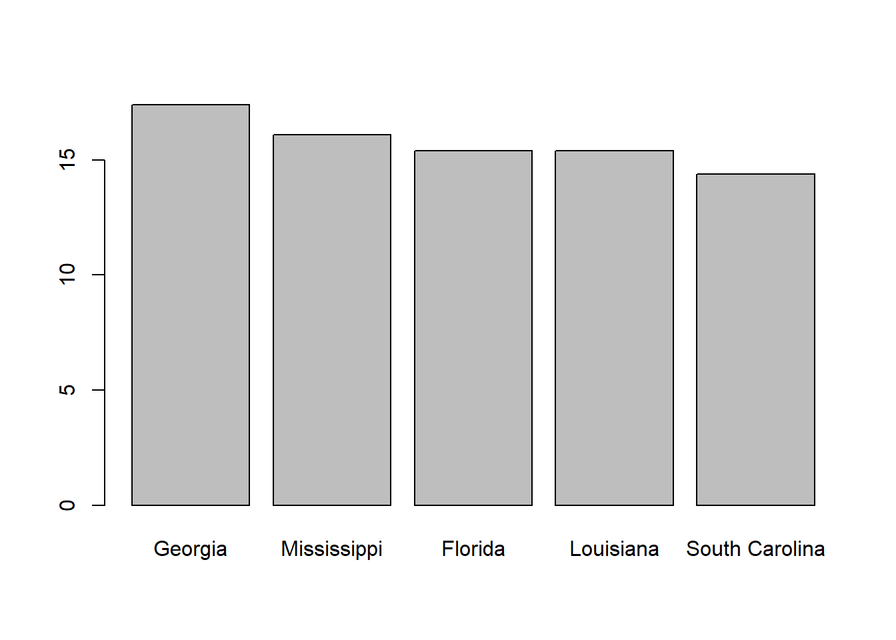

A Basic Introduction To R
UQ SLC Digital Team
2019-07-15

1 Why R?
The majority of tutorials on this site focus on R. This poses the question of why this is so and why learning and using R is better than sticking to ready-made software such as AntConc, SPSS, and Excel.
1.1 R is free, open source, and cutting edge
In contrast to many commercial software packages, R is entirely free and it runs on almost any machine - no matter if you use a PC, a Mac or a Linux machine, R will be up and running after a few seconds without having to pay and fees. R is the most comprehensive statistical analysis environment and new technologies, ideas, and methods often appear first in R before being adapted and sold as commercial software packages.
Also, R is widely used and understood. And due to the creativity and diligence of its users, R is expanding rapidly and becoming more popular and more versatile every day. This is great because if you encounter a problem, there is a huge community of R users that are willing to help - simply type in your problem in your favourite search engine search box and it is highly likely that your issue has already been answered on sites such as <www.stackoverflow.com> or some other R forum or help page. This also means that errors are often very quickly detected and solved as anyone is welcome to provide bug fixes, code enhancements, and new packages.
1.2 R is a programming language
In contrast to SPSS, R is not only a statistics “package” but a fully-fledged programming language (or programming environment). This means that R is extremely flexible and can be used not only for statistics but for all kinds of different tasks: from extracting strings from a corpus, to processing and visualizing data to performing statistics, and even for creating apps and websites (this website, for instance, was created in R and is written in R Markdown).
This also means that once you have a working knowledge of R you will be able to use R for all the things that you need when dealing with language. This is a real advantage because you do not need to learn all sorts of different pieces of software for specific aspects of your work anymore - rather, you only need R and once you have good command of R you will be able to modify existing functions or even write new functions that enable you to do things that were not available in R previously.
1.3 R is simple and good for jobs
Although it may not seem to be when you first encounter R, R is, in fact, very simple and easy to sue compared to almost any other programming language. This is true because R was specifically designed with human users in mind. This is particularly true when R is compared with C (or its direct daughters such as C++), for instance, which is designed for efficiency and is therefore much faster but also much more difficult to learn.
Furthermore, R is very open minded in the sense that you can access many other pieces of software or programming environments from R. Also, R works without a Compiler and is therefore an interpreted language which makes the development of code much easier. R is a vector language is thus more powerful and faster than most other languages (except for languages which are specifically designed for efficiency).
The most important reason why R is so useful is that it is great for visualization, statistics, and data science as well as handing big data.
Finally, R is becoming so wide-spread that many companies use and require knowledge of R form potential employees. This means that being able to program in R is an advantage on the labour market.
1.4 R allows replication
When you do your research in R, you simply write a script that contains the entire analysis. This allows true and honest replication of research. In the humanities replications is not as deeply ingrained in the cultures as it is in the sciences. As a consequence, research in the humanities is not as reliable because only once research has been successfully replicated can it be considered valid. Unfortunately, the humanities do not consider replication as vital as they should and also because replication in the humanities was not as easy as it has been in the sciences. This can change with R because a script which contains all the steps of an analysis can simply be distributed and can therefore be read, understood, and run by other researchers. This is a huge advantage over using ready-made software in which case replications is almost impossible given the various steps that cannot be described properly in the methods sections of articles and papers.
1.5 Disadvantages of R
Since R is open source, the quality of some packages is less than perfect and although errors are often detected and fixed quickly, errors do occur and there is no warranty whatsoever when using R.
As R is designed with the human in mind, code in R can be rather slow and may take up all of the available working memory. While this can be fixed by writing more efficient code in R, often contributors do not optimize their code for efficiency.
Because R is a communal project, it is changing rather quickly and packages that worked some time ago may have become outdated, they can be taken down by the people who have contributed them and the packages may therefore not be available anymore or they may simply be incompatible with a more modern version of R.
1.6 Why not Python?
Before reading on: Learning Python is absolutely worthwhile! Python is a beautiful and probably the most useful and most sought-after programming language. Python is also very useful for text analytics and has been ahead of R for many years (this is changing fast, however). Nonetheless, there are aspects to R which make it particularly useful for data analytics.
Ris growing rapidly in data science while use of Python is receding. While Python is growing in many domains, it is being replaced byRin data science at an enormous rate.Ris extremely stable and there are few incompatibilities between different versions ofR. In inconsistencies occur (which is rare), then they can easily be fixed by re-installing the outdated libraries with a single line of code. Python is constantly changing and code which has been written in Python version 2 is very frequently not compatible with Python version 3 (the current version) even in very basic functions (e.g. theprintcommand in Python 2 differs from theprintcommand in Python 3).Installing additional libraries and packages is merely a single line of code in
R(install.packages()) while the package system in Python is a mess. The official documentation in Python for installing packages encompasses seven pages (I know, this is not quite fair, but worth mentioning).Python is easy to learn but not as principled and thus confusing art a certain stage: in Python, it is often unclear whether to use a function or a [method] (https://stackoverflow.com/questions/8108688/in-python-when-should-i-use-a-function-instead-of-a-method)
Neural Networks, one of the core methods used for Machine Learning and in Artificial Intelligence, are much easier to implement and to use in
Rcompared with Python. in the data science arena is shrinking by the day: Neural Networks.
You can find a more exhaustive post on this issue here.
2 Getting started with R
Start RStudio on your computer. RStudio is a so-called IDE - Integrated Development Environment. The interface provides easy access to R. The advantage of this application is that R programs and files as well as a project directory can be managed easily. The environment is capable of editing and running program code, viewing outputs and rendering graphics. Furthermore, it is possible to view variables and data objects of an R-script directly in the interface. The GUI - Graphical User Interface - that RStudio provides the screen into four areas:
- File editor
- Environment variables
Rconsole- Management panes (File browser, plots, help display and
Rpackages).

2.2 Basic Operations
1 + 2 # addition## [1] 3sqrt(9) # square root function## [1] 3x <- 1 # assignment
1:10 # sequence## [1] 1 2 3 4 5 6 7 8 9 10# install.packages("tm")
library("tm")
require("tm")
# help
#help(require)
#?require
apropos("nova")## [1] "anova" "manova" "power.anova.test"
## [4] "stat.anova" "summary.manova"# set your working directory
setwd("D:\\Uni\\UQ\\LADAL\\SLCLADAL.github.io") 2.3 Data types
x <- 10.5
typeof(x)## [1] "double"class(x)## [1] "numeric"as.integer(x)## [1] 10is.integer(x)## [1] FALSEis.integer(as.integer(x))## [1] TRUEx <- "3.14"
typeof(x)## [1] "character"x <- as.double(x)
1:3 == c(1, 2, 3)## [1] TRUE TRUE TRUE2.4 Vector, matrix and data.frames
options(stringsAsFactors = F)
myvector <- c(1, 2, 3)
names(myvector) <- c("one", "two", "three")
print(myvector)## one two three
## 1 2 3print(myvector[1:2])## one two
## 1 2print(myvector[-1])## two three
## 2 3sum(myvector)## [1] 6mean(myvector)## [1] 2mymatrix <- matrix(0, nrow=3, ncol=4)
rownames(mymatrix) <- c("one", "two", "three")
colnames(mymatrix) <- c("house", "sun", "tree", ".")
mymatrix[, 1] <- 12
mymatrix[, "sun"] <- 4
mymatrix[3, 4] <- 5
mymatrix[2, 3:4] <- 9
colSums(mymatrix)## house sun tree .
## 36 12 9 14rowSums(mymatrix)## one two three
## 16 34 21colMeans(mymatrix)## house sun tree .
## 12.000000 4.000000 3.000000 4.666667mydatdaframe <- data.frame(v = c(1, 2, 3), c = as.character(myvector), n = c("one", "two", "three"))
mydatdaframe$v## [1] 1 2 3mydatdaframe$c## [1] "1" "2" "3"mydatdaframe[, "c"]## [1] "1" "2" "3"mydatdaframe[1, ]## v c n
## 1 1 1 one#rowSums(mydatdaframe)2.5 More basic functions
sort(mydatdaframe$n)## [1] "one" "three" "two"sort(mydatdaframe$n, decreasing = T)## [1] "two" "three" "one"c(myvector, myvector)## one two three one two three
## 1 2 3 1 2 3is.vector(myvector)## [1] TRUEis.matrix(mymatrix)## [1] TRUEis.matrix(myvector)## [1] FALSEmymatrix / 2## house sun tree .
## one 6 2 0.0 0.0
## two 6 2 4.5 4.5
## three 6 2 0.0 2.5mymatrix / myvector## house sun tree .
## one 12 4.000000 0.0 0.000000
## two 6 2.000000 4.5 4.500000
## three 4 1.333333 0.0 1.666667t(mymatrix)## one two three
## house 12 12 12
## sun 4 4 4
## tree 0 9 0
## . 0 9 5mymatrix %*% t(mymatrix)## one two three
## one 160 160 160
## two 160 322 205
## three 160 205 185cbind(mymatrix, myvector)## house sun tree . myvector
## one 12 4 0 0 1
## two 12 4 9 9 2
## three 12 4 0 5 3rbind(mymatrix, myvector)## house sun tree .
## one 12 4 0 0
## two 12 4 9 9
## three 12 4 0 5
## myvector 1 2 3 1data(USArrests)
#View(USArrests)
dim(USArrests)## [1] 50 4nrow(USArrests)## [1] 50ncol(USArrests)## [1] 4length(USArrests)## [1] 4max(USArrests)## [1] 337which.max(USArrests[, "Murder"])## [1] 10o <- order(USArrests[, "Murder"], decreasing = T)
USArrests[o, ]## Murder Assault UrbanPop Rape
## Georgia 17.4 211 60 25.8
## Mississippi 16.1 259 44 17.1
## Florida 15.4 335 80 31.9
## Louisiana 15.4 249 66 22.2
## South Carolina 14.4 279 48 22.5
## Alabama 13.2 236 58 21.2
## Tennessee 13.2 188 59 26.9
## North Carolina 13.0 337 45 16.1
## Texas 12.7 201 80 25.5
## Nevada 12.2 252 81 46.0
## Michigan 12.1 255 74 35.1
## New Mexico 11.4 285 70 32.1
## Maryland 11.3 300 67 27.8
## New York 11.1 254 86 26.1
## Illinois 10.4 249 83 24.0
## Alaska 10.0 263 48 44.5
## Kentucky 9.7 109 52 16.3
## California 9.0 276 91 40.6
## Missouri 9.0 178 70 28.2
## Arkansas 8.8 190 50 19.5
## Virginia 8.5 156 63 20.7
## Arizona 8.1 294 80 31.0
## Colorado 7.9 204 78 38.7
## New Jersey 7.4 159 89 18.8
## Ohio 7.3 120 75 21.4
## Indiana 7.2 113 65 21.0
## Wyoming 6.8 161 60 15.6
## Oklahoma 6.6 151 68 20.0
## Pennsylvania 6.3 106 72 14.9
## Kansas 6.0 115 66 18.0
## Montana 6.0 109 53 16.4
## Delaware 5.9 238 72 15.8
## West Virginia 5.7 81 39 9.3
## Hawaii 5.3 46 83 20.2
## Oregon 4.9 159 67 29.3
## Massachusetts 4.4 149 85 16.3
## Nebraska 4.3 102 62 16.5
## Washington 4.0 145 73 26.2
## South Dakota 3.8 86 45 12.8
## Rhode Island 3.4 174 87 8.3
## Connecticut 3.3 110 77 11.1
## Utah 3.2 120 80 22.9
## Minnesota 2.7 72 66 14.9
## Idaho 2.6 120 54 14.2
## Wisconsin 2.6 53 66 10.8
## Iowa 2.2 56 57 11.3
## Vermont 2.2 48 32 11.2
## Maine 2.1 83 51 7.8
## New Hampshire 2.1 57 56 9.5
## North Dakota 0.8 45 44 7.3murderRates <- USArrests[o[1:5], "Murder"]
names(murderRates) <- rownames(USArrests)[o[1:5]]
barplot(murderRates)